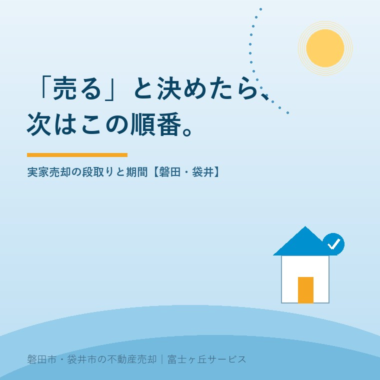

2026年8月1日｜カテゴリ：売却の実務・実家じまい

この記事の要点
Q. 家族で実家を売ると決めた。何から始めて、どれくらいかかる？
A. 流れは「準備→査定→媒介契約→売り出し→内覧→売買契約→引き渡し」の7段階です。売り出しから引き渡しまでは3〜6か月が目安ですが、実家の場合は名義の整理や片付けなどの準備に時間がかかるため、全体では半年〜1年みておくのが現実的です。磐田市・袋井市・森町では、介護施設の運営から不動産事業を始めた富士ヶ丘サービスのような地域密着の会社に、準備の段階から段取りを相談するという選択肢があります。
もうすぐお盆。家族がそろう席で「実家、そろそろ売ろうか」という結論が出るご家庭は少なくありません。ところが、実はそこからが本番です。「で、何から始めるの？」「いつ売れるの？」──決めたのに動けないまま、次のお盆が来てしまった、というご相談を毎年いただきます。今日は、8月の家族会議の"予習"として、実家売却の段取りと期間の全体像を、地元の不動産屋の実務目線でまとめます。
| ステップ | やること | 期間の目安 |
|---|---|---|
| ①準備 | 名義（相続登記）・書類・残置物・境界の確認と整理 | 1〜3か月（状況次第でそれ以上） |
| ②査定 | 不動産会社による机上査定・訪問査定 | 1〜2週間 |
| ③媒介契約 | 売却を依頼する会社と契約（後述の3種類から選ぶ） | 数日 |
| ④売り出し・内覧 | 広告掲載、購入希望者の見学対応、価格の見直し | 2〜6か月 |
| ⑤買付・条件交渉 | 購入申込を受けて価格・引き渡し時期を調整 | 1〜2週間 |
| ⑥売買契約 | 重要事項説明・契約締結・手付金の受領 | 1日（準備1〜2週間） |
| ⑦決済・引き渡し | 残代金の受領・所有権移転登記・鍵の引き渡し | 契約から1〜2か月後 |
④の売却活動が「3〜6か月」と幅があるのは、価格設定と物件の状態次第だからです。相場に合った価格で状態の良い家なら1〜2か月で決まることもあれば、強気の価格で始めると1年動かないこともあります。売り出しから引き渡しまで3〜6か月、準備を含めて半年〜1年──これが実家売却の標準的な時間感覚です。
一般の住み替えと違い、実家売却は売り出す前の準備で差がつきます。この夏に書いてきた記事のとおり、つまずきの芽はほとんど準備段階にあります。
逆に言えば、ここさえ整っていれば、売り出し後はスムーズに進みます。「お盆に方針決定→秋に売り出し→年度内に引き渡し」が、期限のある特例とも相性のよい理想的なスケジュールです。
売却を不動産会社に依頼する契約（媒介契約）には、宅建業法で定められた3つの型があります。
| 一般媒介 | 専任媒介 | 専属専任媒介 | |
|---|---|---|---|
| 複数社への依頼 | できる | 1社のみ | 1社のみ |
| 自分で見つけた買主と直接契約 | できる | できる | できない |
| レインズ（指定流通機構）への登録 | 義務なし（任意） | 契約から7日以内に義務 | 契約から5日以内に義務 |
| 販売状況の報告 | 義務なし | 2週間に1回以上 | 1週間に1回以上 |
| 契約期間 | 制限なし（実務上3か月が多い） | 3か月以内 | 3か月以内 |
レインズとは不動産会社間の物件情報ネットワークで、ここに登録されると地域の他社も買主を探せるようになります。専任・専属専任は「1社に任せる代わりに、登録義務と報告義務で会社側の責任が重くなる」設計です。実家のように、鍵の管理・草刈り・近隣対応・価格の相談ごとまで発生する売却では、窓口が1つにまとまる専任系を選ぶ方が実務は円滑です。いずれの契約でも、報告の中身（問い合わせ数・内覧数・反応）を見て、3か月ごとの更新時に価格や販売方法を見直すのが上手な使い方です。
磐田・袋井の実家は、整った状態なら需要はしっかりあります。磐田市の中古住宅補助金を使う子育て世帯の買主も増えており、「書類がそろい、名義がきれいで、家財が片付いた家」は3〜6か月の標準レンジで動きます。一方、農地つき・広すぎる敷地・境界未確定といった個性の強い実家は長期戦になりがちで、だからこそ準備段階からの逆算が効きます。
当社のふじがおか実家カルテは、まさにこの「①準備」を1冊に整理するサービスです。名義・書類・支障の有無を先に洗い出し、売り出しまでの段取り表を作ってお渡しします。お盆の家族会議で「売る」と決まったら──いえ、決まりそうなら、その前にぜひご相談ください。
富士ヶ丘サービスは、磐田市・袋井市に特化した地域密着の会社として、「高く売る」だけでなく「家族が迷子にならない売却の段取り」を大切にしています。この夏、家族で実家の話をする前の予習に、この記事がお役に立てば幸いです。実家じまい相談室もあわせてご利用ください。
ふじがおか実家カルテ｜「売る」と決める前の段取りづくりに
名義・書類・支障の洗い出しと、売り出しまでの段取り表を1冊に。
登記情報と固定資産税通知書から、売却の前提条件を宅建士が机上で確認し、いつ・何から始めるかを整理してお渡しします。お盆の家族会議の資料としてもどうぞ。
本記事は2026年8月1日時点の情報をもとに作成しています。売却期間は物件の状態・価格設定・市況により大きく変わります。媒介契約の細かな条件は契約書で、譲渡所得の確定申告は税理士・税務署へご確認ください。

この記事を書いた人：大石浩之（宅地建物取引士）
磐田市・袋井市・森町で「介護×相続×空き家」に特化した不動産売却支援を行う富士ヶ丘サービスの代表取締役・宅地建物取引士。介護施設の運営から不動産事業を始めた経験をもとに、売主とご家族が困らない売却を一件ずつお手伝いしています。プロフィール
磐田市・袋井市・森町の実家じまい・相続空き家相談
固定資産税通知書だけでも相談できます
住所があいまいでも、通知書や写真から名義・道路・農地・残置物の確認順を整理します。カルテ申込またはLINEで状況を送ってください。
富士ヶ丘サービス株式会社／静岡県磐田市見付5789番地1／TEL:0538-31-3308／静岡県知事 (2) 第14083号／代表取締役・宅地建物取引士 大石 浩之